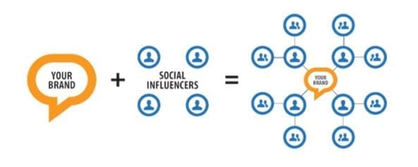
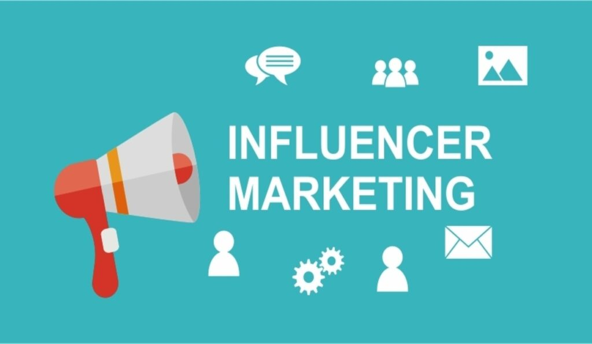
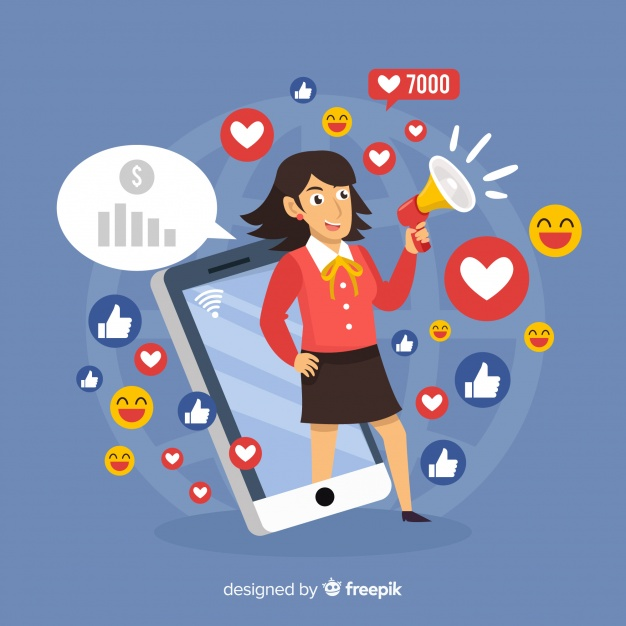

What is Influencer Marketing?
Author – Michelle Lagos CEO
The Influencer
An Influencer is a person who actively uses social platforms and has a certain scope of interest and influence. They may be bloggers, business owners, public figures, journalists, local or national celebrities, or other people that have a big number of followers and often times are doing quite a bit of marketing and advertising on their own.
So, Influencer Marketing is a type of advertising where a brands’ promotion is maintained with the help of people who have influence in social networks.
Using influencer marketing you can achieve such goals, as:
- increasing brand awareness;
- growing loyalty;
- creating unique content;
- attracting a new audience;
- getting honest feedback.

What Types of Influencers Are There?
There are 3 main types of Influencers:
- Micro-influencers (less than 10K followers)
- Macro-influencers (10K-1M followers)
- Mega-influencers (more than 1M followers)

What Brands Need to Know When Working With Influencers
To find the right influencer for your brand, first ask yourself who your target audience is. You can find influencers whose followers are your target market by searching social media and using apps and services like influencer analytics and marketing platforms. You can also work with content marketing agencies and PR firms that will help you find the best influencers for your target audience.
It’s important to find influencers that reflect a brand’s identity, aesthetics, and values. Be sure to get a good sense of an influencer’s personality, style, and audience before moving forward. Review their social media carefully to ensure that they’re responsible, culturally aware, and respectful.
Make sure that your influencer understands your brand and expectations from the partnership. Outline expected deliverables clearly in a brief. Make sure that the influencer has everything they need to create content, and remember to be patient and realistic about ROI.
Social Media Facts You Want To Know
There are 3.660 billion active mobile social media users globally
The Hootsuite report emphasizes the importance of mobile nowadays. The vast majority of the people who use social media worldwide do so with mobile devices at times. This statistic grew by 15% over the last year. Notably, there are now 5.155 billion unique mobile users, making mobile phones truly part of our everyday life.
Roughly ¾ of Facebook users visit the site daily
While Facebook users may not be the most targeted audience by influencer marketers, they still use the social site regularly. Pew Research has found that 51% of Facebook users use the app/site several times a day, with a further 23% using Facebook about once a day. This compares with Instagram (42% multiple times daily, 21% daily) and Snapchat (46% numerous times daily, and 15% daily). YouTube and Twitter users visit the sites on a less regular basis.
LinkedIn features 90 million senior-level influencers
LinkedIn has released a diagram highlighting some of the key demographics of its members. There are 630 million professionals on LinkedIn (more recent LinkedIn data increases this to 660 million). These include 90 million senior-level influencers, 40 million mass affluent, 63 million decision-makers, 17 million opinion leaders, 10 million C-level execs, 6 million IT decision-makers, and 3 million MBA graduates.
Despite the massive uptake in mobile use, laptops and computers still have an essential role in internet usage
With such a high number of mobile social media users, you might be forgiven for thinking that the days of laptops and computers may be over. Yet Hootsuite found that mobile phones still only account for 51.74% of web traffic, with laptops and computers still accounting for 44.53%. Tablets, 3.65%, and Other Devices (such as gaming systems), 0.08%, make the difference. Notably, the use of laptops and computers on the internet grew 1.0% in relative terms this year, while mobile phones only grew by 0.2%. Tablets and Other Devices were the big losers, dropping by 13%, and 20%, respectively.
YouTube is the world’s second most visited website; Facebook is the fifth
According to Alexa, YouTube is the second most visited website after just Google. Facebook moves around in the rankings, but it is currently in 5th place. With Google owning YouTube, the company can clearly claim web dominance.
71% of Instagram users are under the age of 35
Recent data from Statista emphasizes just how young Instagram’s userbase is. 6% of their worldwide users are aged between 13 and 17, 30% are 18-24, and 35% come in the 25-34% age range. Numbers drop down to 16.3% of 35-44 year-olds, with even fewer Instagrammers in the older age brackets.
The Top 20 Instagram Micro-Influencers That Have Yet To Be Discovered